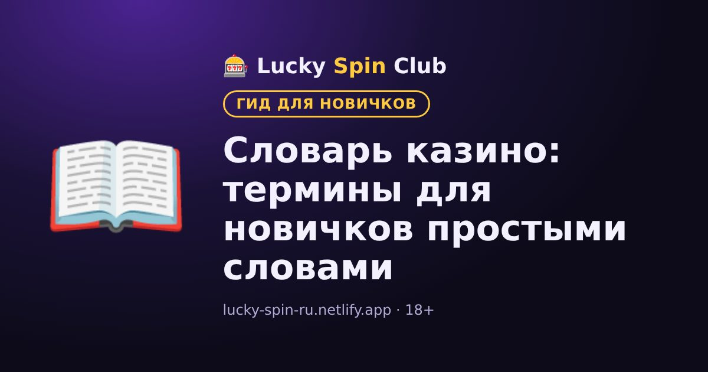

Главная / Словарь казино
Словарь казино: термины для новичков простыми словами

Короткий словарь терминов, которые встречаются в онлайн-казино. Если какое-то слово в правилах бонуса или игры непонятно — найдите его здесь.
Общие понятия
- Бонус
- Дополнительные средства или фриспины от казино, обычно с условиями отыгрыша.
- Вейджер (wager)
- Сколько раз нужно поставить сумму бонуса, чтобы его можно было вывести. Подробнее — в статье «Что такое вейджер».
- Депозит
- Пополнение игрового счёта.
- Верификация (KYC)
- Проверка личности игрока по документам, обычно перед первым выводом.
- Банкролл
- Сумма, которую вы заранее выделили на игру и готовы потерять.
- Кэшбэк
- Возврат части проигранных средств по правилам акции казино.
- Программа лояльности
- Система уровней или баллов за активную игру с бонусами за повышение.
- Самоисключение
- Добровольная блокировка аккаунта на выбранный срок, инструмент ответственной игры.
- Зеркало
- Копия сайта казино на другом адресе. Пользуйтесь только адресами из официальных источников казино: мошенники создают поддельные зеркала.
Слоты
- RTP
- Процент возврата игроку: какую долю ставок слот в среднем возвращает на очень длинной дистанции.
- Волатильность (дисперсия)
- Насколько часто и крупно слот выплачивает выигрыши: низкая — часто и понемногу, высокая — редко, но крупно.
- ГСЧ (RNG)
- Генератор случайных чисел, который определяет результат каждого спина.
- Спин
- Одно вращение барабанов слота.
- Линия выплат (payline)
- Линия на барабанах, по которой засчитываются выигрышные комбинации.
- Wild (дикий символ)
- Символ, который заменяет другие символы и помогает собрать комбинацию.
- Scatter (скаттер)
- Символ, который платит в любом месте экрана и часто запускает бонусную игру или фриспины.
- Фриспины
- Бесплатные вращения: бонус от казино или функция внутри слота.
- Множитель
- Увеличивает выигрыш в заданное число раз, например ×2 или ×10.
- Megaways
- Механика слотов, при которой число способов выигрыша меняется на каждом спине.
- Джекпот
- Крупный приз. Прогрессивный джекпот растёт за счёт части ставок игроков.
- Bonus Buy
- Функция покупки бонусной игры за фиксированную цену вместо ожидания её выпадения.
- Демо-режим
- Игра на виртуальные фишки без риска для реальных денег.
Настольные и live-игры
- Преимущество казино (house edge)
- Математическое преимущество казино в игре. Например, в европейской рулетке — около 2,7%.
- Крупье (дилер)
- Сотрудник, который ведёт игру за столом или в live-студии.
- Live-казино
- Игры с живым дилером в прямом видеоэфире.
- Блэкджек
- Карточная игра против дилера, цель — набрать больше очков, чем у дилера, но не больше 21.
- Сплит
- В блэкджеке — разделение двух одинаковых карт на две руки.
- Дабл (удвоение)
- В блэкджеке — удвоение ставки с получением ровно одной карты.
- Баккара
- Карточная игра, где ставят на руку игрока, банкира или ничью.
Платежи
- Валюта счёта
- Валюта, в которой открыт игровой счёт. Её часто нельзя поменять после регистрации.
- Стейблкоин
- Криптовалюта с курсом, привязанным к доллару, например USDT или USDC.
- Сеть (TRC20, ERC20, BSC)
- Блокчейн, через который отправляется криптовалюта. Сеть при отправке должна совпадать с сетью, указанной в казино.
- Лимит вывода
- Минимальная или максимальная сумма, которую можно вывести за один раз или за период.
Готовы попробовать? Регистрация занимает около минуты.
🎁 Зарегистрироваться и получить бонус18+ · Условия бонуса — на сайте казино
Часто задаваемые вопросы
Что означает RTP в слотах?
RTP — процент возврата игроку: какую долю всех ставок слот в среднем возвращает на очень длинной дистанции.
Чем wild отличается от scatter?
Wild заменяет другие символы в комбинации, а scatter платит в любом месте экрана и часто запускает бонусную игру или фриспины.
Что такое house edge?
Это математическое преимущество казино в игре. Например, в европейской рулетке оно составляет около 2,7%.